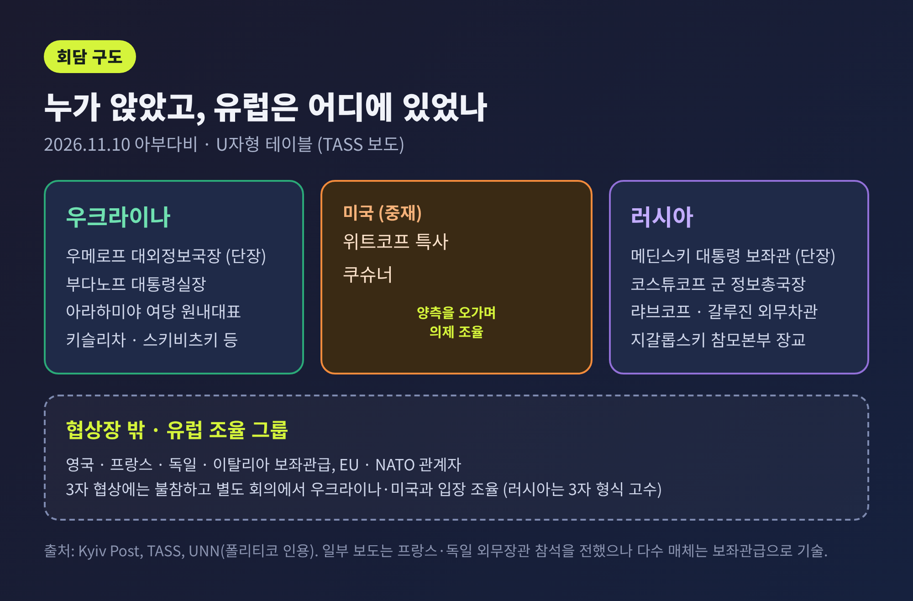
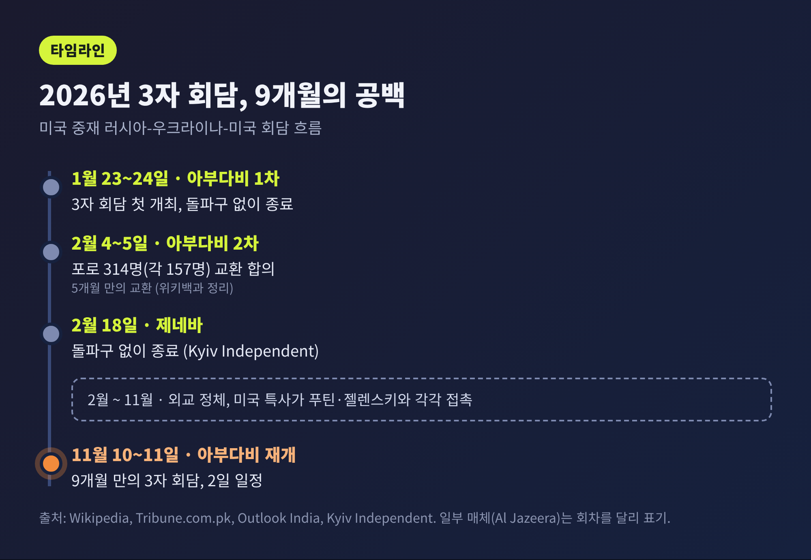
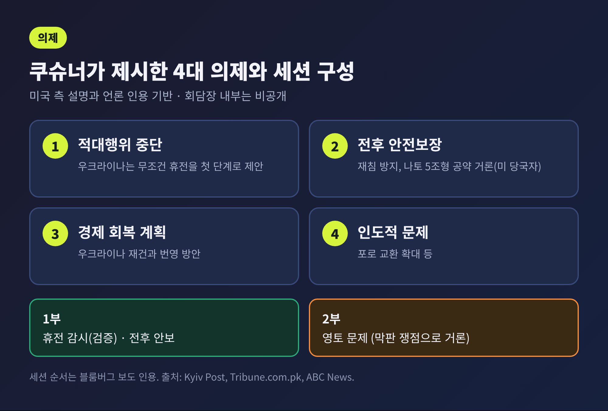
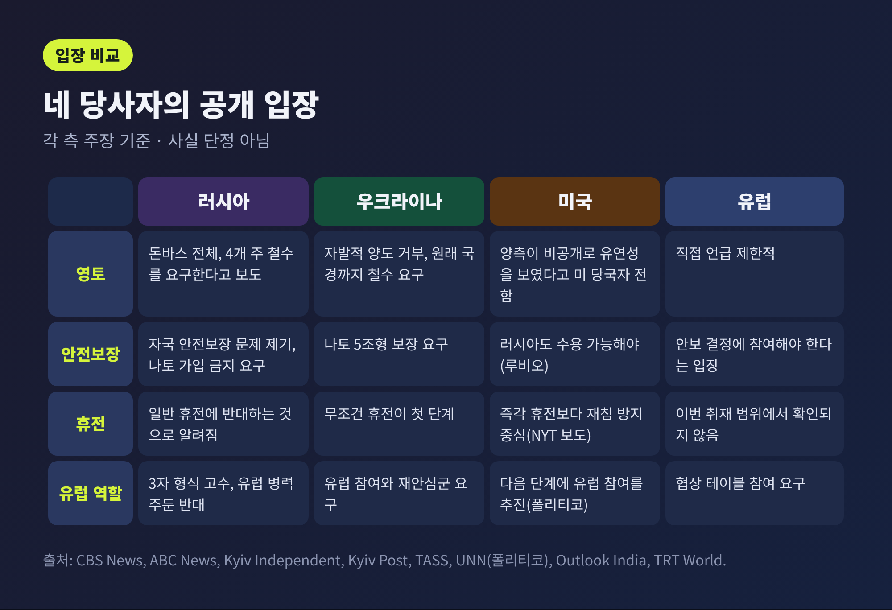
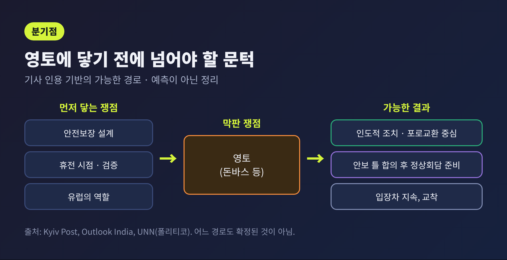

아부다비 3자 회담 개시, 안전보장과 유럽 참여가 첫날 쟁점

오늘은 11월 10일 아부다비에서 막을 올린 러시아·우크라이나·미국 3자 회담의 첫날 상황을 정리해 보려 합니다. 회담은 11일까지 이틀 일정이며, 2월 제네바 회담 이후 약 9개월 만에 세 나라가 한자리에 앉았습니다. 이 글은 누가 참석했고 무엇을 논의하는지, 각 측이 무엇을 요구하는지에 집중합니다. 작성 시점은 10일 저녁이며 회담 결과는 아직 나오지 않았습니다.
3줄 요약 - 미국 특사 위트코프와 쿠슈너가 중재하는 3자 회담이 10일 시작됐고, 11일까지 이어집니다. - 의제는 적대행위 중단, 전후 안전보장, 경제 회복, 인도적 문제이며, 영토는 막판 쟁점으로 거론됩니다. - 유럽은 협상장 밖 별도 회의에 머물렀고, 러시아가 이 틀을 유지하는 한 '유럽의 자리'가 최대 변수입니다.
무슨 일이 있었나: 9개월 만에 다시 마주 앉았습니다
10일 오전 아부다비에서 미국 중재 3자 회담이 시작됐습니다. 러시아 국영 타스(TASS)는 두 나라 대표단이 U자형 테이블에서 서로 마주 앉았다고 전했습니다. 아랍에미리트(UAE)의 압둘라 빈 자이드 외무장관은 참석자를 맞이하며 분쟁이 평화적으로 끝나기를 바란다는 뜻을 밝혔다고 보도됐습니다.
참석자 구성은 다음과 같습니다. 미국에서는 스티브 위트코프 특사와 재러드 쿠슈너가 중재를 맡았습니다. 우크라이나는 루스템 우메로프 대외정보국장이 단장이고, 키릴로 부다노프 대통령실장과 다비드 아라하미야 여당 원내대표 등이 함께했습니다. 러시아는 블라디미르 메딘스키 대통령 보좌관이 단장이며, 군 정보총국장 이고르 코스튜코프와 세르게이 랴브코프 외무차관 등이 포함됐습니다.

눈여겨볼 대목은 유럽의 위치입니다. 영국·프랑스·독일·이탈리아의 보좌관급과 EU·NATO 관계자가 아부다비에 와 있지만, 이들은 3자 협상에 직접 참여하지 않고 별도 회의에서 우크라이나·미국 측과 입장을 조율합니다. 우메로프 단장은 텔레그램에서 첫 회의에 유럽 대표들과 위트코프·쿠슈너가 함께한다며 "입장을 조율하고 다음 단계를 맞추겠다"고 밝혔습니다. 일부 보도는 프랑스·독일 외무장관이 참석한다고 전했으나, 다수 매체는 보좌관급으로 기술해 이 글은 후자를 따릅니다.
왜 중요한가: 정체된 외교가 다시 움직였습니다
올해 1월 23~24일 아부다비에서 첫 3자 회담이 열렸고, 2월 4~5일 2차 회담에서는 포로 314명(양측 각 157명) 교환이 합의됐습니다. 2월 18일 제네바 회담에서는 돌파구가 나오지 않았습니다. 이후 외교는 사실상 멈췄고, 위트코프와 쿠슈너는 푸틴 대통령과 젤렌스키 대통령을 각각 따로 만났습니다.

예전에는 협상 자체가 뉴스였다면, 지금은 협상이 열린다는 사실만으로는 부족합니다. 겨울이 다가오며 러시아가 우크라이나 전력망 공격을 재개한 시점이기 때문입니다. 우크라이나 공군은 10일 새벽 러시아 드론 162기와 탄도미사일 1발이 발사됐고 그중 135기를 격추하거나 무력화했다고 밝혔습니다. 러시아 국방부는 우크라이나 드론 최소 155기를 격추했다고 주장했습니다. 회담장 안과 밖의 시간이 함께 흐르고 있는 셈입니다.
트럼프 대통령의 신호도 있었습니다. 그는 CBS 방송 '60 Minutes'에서 전쟁이 "곧" 끝날 것이라고 말했고, 우크라이나 영토는 "조금 다른 모양"이 될 것이라고 덧붙였습니다. 10일에는 양측에 "매우 강한 종전 의향"이 있고 "싸움에 지쳤다"는 취지로 말했다고 전해졌습니다. 반면 마르코 루비오 국무장관은 "갈 길이 멀다"고 선을 그었습니다. 낙관과 신중이 같은 날 나온 것입니다.
무엇을 논의하나: 네 갈래 의제와 두 개의 세션
쿠슈너가 제시한 의제는 네 가지로 보도됐습니다. 첫째 적대행위 중단, 둘째 재침 방지를 위한 전후 안전보장, 셋째 우크라이나 경제 회복 계획, 넷째 인도적 문제입니다. 쿠슈너는 미국이 양측 사이에 남은 간극을 파악했고 이를 메울 아이디어를 갖고 있으며, 양측과 "거의 매일 대화"해 왔다고 말했습니다.
러시아의 우선순위는 다소 다릅니다. 세르게이 라브로프 외무장관은 러시아·우크라이나·지역 전체의 안보 문제를 최우선에 두겠다고 밝혔습니다. 드미트리 페스코프 대통령실 대변인은 안전보장에 초점이 맞춰지며 세부는 비공개라고 말했습니다. 우크라이나 측은 포로 교환 확대, 해상·에너지 휴전 가능성, 정상회담 기반 마련을 희망한다고 알려졌습니다.

세션 구성은 블룸버그가 미국 당국자를 인용해 전한 내용입니다. 1부는 휴전 감시(검증)와 전후 안보, 2부는 영토 문제라는 것입니다. 뉴욕타임스는 즉각 휴전보다 재침 방지 보장이 중심이라고 보도했습니다. 로이터가 인용한 미국 당국자는 나토 5조와 유사한 방위 공약이 논의될 수 있다고 말했습니다. 로이터는 종전, 안전보장, EU 가입 로드맵을 묶은 제안이 거론된다고도 전했습니다. 다만 이는 모두 미국 측 설명과 언론 인용이며, 회담장 내부 내용은 공개되지 않았습니다.
각국 입장: 같은 단어, 다른 해석
네 당사자의 공개 입장을 나란히 놓으면 간극이 뚜렷합니다.

러시아는 돈바스 전체를 요구하는 것으로 알려져 있습니다. 보도에 따르면 푸틴 대통령은 2022년 9월 병합을 선언한 도네츠크·루한스크·자포리자·헤르손 4개 주에서 우크라이나군이 철수할 것, 나토 가입을 포기할 것, 군사력을 제한할 것을 요구해 왔습니다. 러시아어와 모스크바 계열 정교회에 대한 제한 해제도 포함됩니다. 페스코프는 협상 형식이 처음부터 3자로 합의됐으므로 유럽 대표는 참여할 수 없다고 말했습니다. 러시아는 대표단이 푸틴에게 "전보식" 요약 또는 종합 보고 중 하나를 상황에 따라 택하겠다고 밝혔습니다.
우크라이나는 러시아가 통제하지 않는 영토를 자발적으로 넘기지 않겠다는 입장입니다. 군사력 제한도 받아들이지 않겠다고 밝혀 왔습니다. 무조건 휴전을 첫 단계로 제안하고, 나토 5조형 보장과 유럽 주도의 재안심 병력, 지속적인 서방 군사 지원을 요구합니다. 젤렌스키 대통령은 전장 성과와 러시아의 큰 손실이 협상력을 높였다고 주장했으나, 모스크바는 이를 부인했습니다. 한 고위 당국자는 영토 문제가 정상 차원에서, 안전보장과 함께일 때만 논의된다고 밝혔습니다.
미국은 중재자이면서 압박의 주체이기도 합니다. 미 당국자는 양측이 비공개로 영토 문제에 일정한 유연성을 보였다고 로이터에 전했습니다. 영토 합의는 다른 쟁점이 정리된 뒤 막판에 올 것이라는 설명도 덧붙였습니다. 이에 맞서 우크라이나 측 한 고위 당국자는 영토 양보를 검토한다는 보도를 부인했습니다. 양측이 실제로 얼마나 움직일지는 확인되지 않았습니다.
유럽은 자국 안보가 걸린 결정에 참여해야 한다는 입장입니다. 프랑스는 지속 가능한 평화에는 유럽의 참여가 필요하다고 밝혔습니다. 정치 매체 폴리티코는 익명의 미국 당국자를 인용해, 위트코프와 쿠슈너가 이번 회담을 유럽 없이 열리는 마지막 회담으로 만들기 위해 러시아를 압박할 계획이라고 전했습니다. 유럽 내부에서도 누가 유럽을 대표할지, 푸틴과 직접 대화할지를 두고 의견이 갈립니다.
협상의 걸림돌: 영토보다 먼저 부딪힐 세 가지
영토는 가장 눈에 띄는 쟁점이지만, 회담 구조상 가장 늦게 다뤄질 가능성이 큽니다. 그 앞에서 부딪힐 쟁점은 세 가지입니다.
첫째는 안전보장의 설계입니다. 우크라이나는 나토 5조형 보장을 원하고, 러시아는 자국의 안전보장 문제를 따로 제기합니다. 젤렌스키 대통령은 러시아가 말하는 안전보장이 동·중부 유럽에서 나토 배치를 되돌리자는 뜻일 가능성이 크다고 주장해 왔습니다. 루비오 장관은 보장이 우크라이나뿐 아니라 러시아에도 수용 가능해야 한다고 말했습니다. 같은 문장을 두 나라가 정반대로 읽을 수 있습니다.
둘째는 휴전의 시점과 검증입니다. 우크라이나는 무조건 휴전을 먼저 요구하고, 러시아는 일반적인 휴전에 반대하는 것으로 알려져 있습니다. 첫 세션에서 휴전 감시가 거론된다는 보도는 있으나, 휴전 자체가 의제인지는 매체마다 표현이 엇갈립니다.
셋째는 유럽의 역할입니다. 우크라이나가 요구하는 유럽 주도 재안심군에 러시아는 반대합니다. 러시아 외무부 대변인 마리야 자하로바는 9일 시작된 유럽 '의지의 연합' 훈련 '코얼리션 26.2'를 두고, 유럽이 협상 테이블에 설 자리가 없음을 보여준다고 주장했습니다. 훈련이 억지력인지 도발인지는 입장에 따라 다르게 평가됩니다.

앞으로의 일정과 전망
공식 일정은 11일 2일차까지입니다. 그 이후 날짜는 어느 매체도 확정해 전하지 않았습니다. 키이우포스트는 위트코프와 쿠슈너가 회담 뒤 러시아를 방문해 푸틴 대통령을 만날 수 있다고 전했습니다. 다만 '가능성'일 뿐 확정은 아닙니다. 쿠슈너는 이번 회담이 "모멘텀을 쌓는 첫 단계"라고 평가했습니다.
기대치는 낮게 잡혀 있습니다. 아라하미야 의원은 "돌파구는 없을 것"이라면서도 재개 자체가 성과라고 말했고, 2차 회의에는 더 기대를 걸었습니다. 반면 우크라이나 의회 외교위원장 올렉산드르 메레시코는 포로 교환 외에는 "희망이 전혀 없다"며, 푸틴이 제재를 피하려 협상하는 시늉을 한다고 주장했습니다. 이 비판은 한 정치인의 주장이며 러시아 측 반론은 이 글에서 확인되지 않았습니다.
앞으로 지켜볼 분기점은 세 가지입니다. 첫째, 11일 이후 양측이 포로 교환이나 에너지·해상 휴전 같은 구체적 조치를 발표하는지 봐야 합니다. 둘째, 미국 특사들이 추진하겠다고 밝힌 대로 다음 단계에서 유럽에 협상 자리를 열도록 러시아를 설득할 수 있는지가 관건입니다. 셋째, 정상회담 준비가 실제 일정으로 이어지는지입니다.
정리하면 이렇습니다. 오늘 아부다비에서는 협상이 다시 열렸다는 사실 외에 확정된 합의는 없습니다. 안전보장이 먼저, 영토가 나중이라는 순서는 보도로 전해졌을 뿐이고 양측 요구는 여전히 크게 어긋나 있습니다.
"시작했다는 것과 풀렸다는 것은 다릅니다."
이틀째 회담이 끝난 뒤 어떤 숫자와 날짜가 공개되는지, 그것이 다음 글의 출발점이 될 것입니다.
참고 보도: CBS News, ABC News, Al Jazeera, The Kyiv Independent, Kyiv Post, TASS, TRT World(로이터 인용), UNN(폴리티코 인용), Outlook India, Tribune.com.pk (모두 2026년 11월 10일 기준, 각 측 주장은 해당 보도의 인용입니다)
#아부다비회담 #러시아우크라이나 #3자회담 #안전보장 #위트코프 #쿠슈너 #유럽의지의연합 #국제뉴스